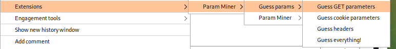

Burp Param Miner
Param Miner (Burp Extension)Github:
https://github.com/portswigger/param-minerDocumentation:
https://github.com/albinowax/param-miner-docIt is possible to find the output on Burp → Extender->Extensions->Param Miner->Output
If we install the extension “
Logger++” we can see the queries also of the extensions(including Program Miner) of Burp that normally are not listed on BurpSuite History.